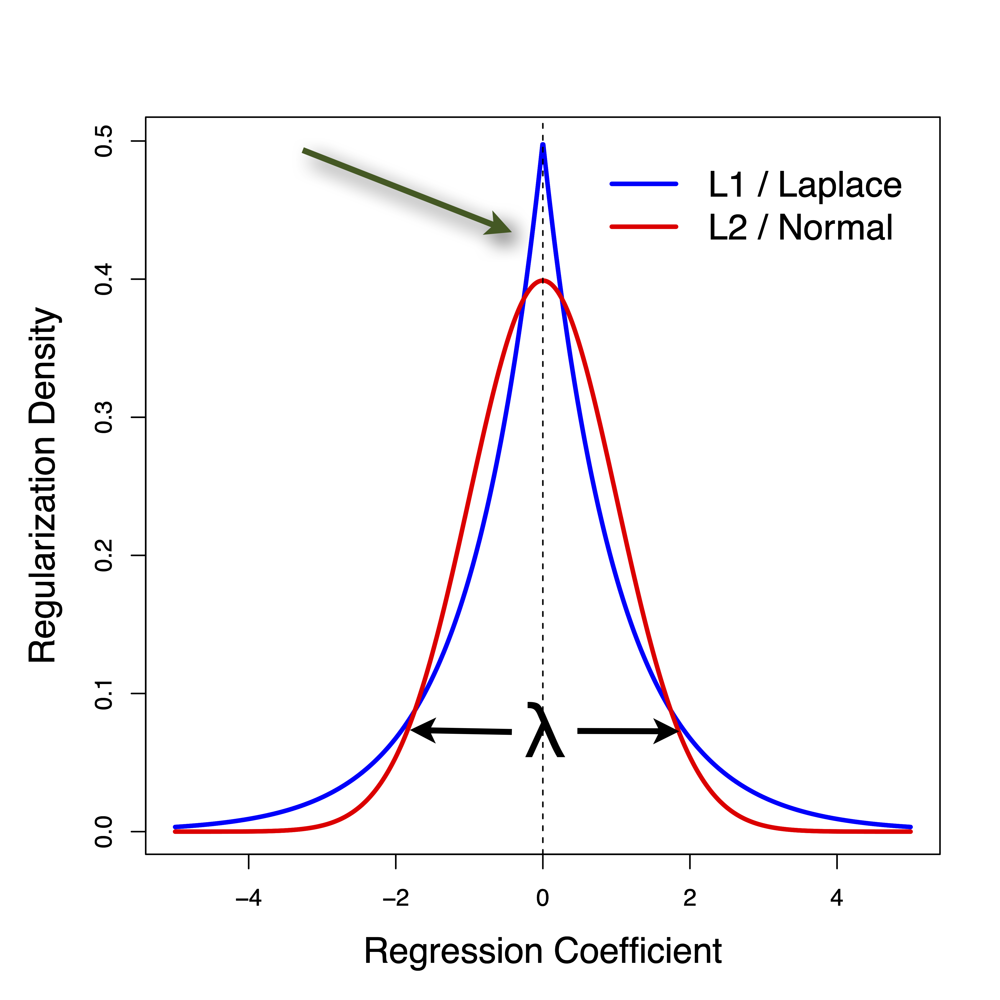
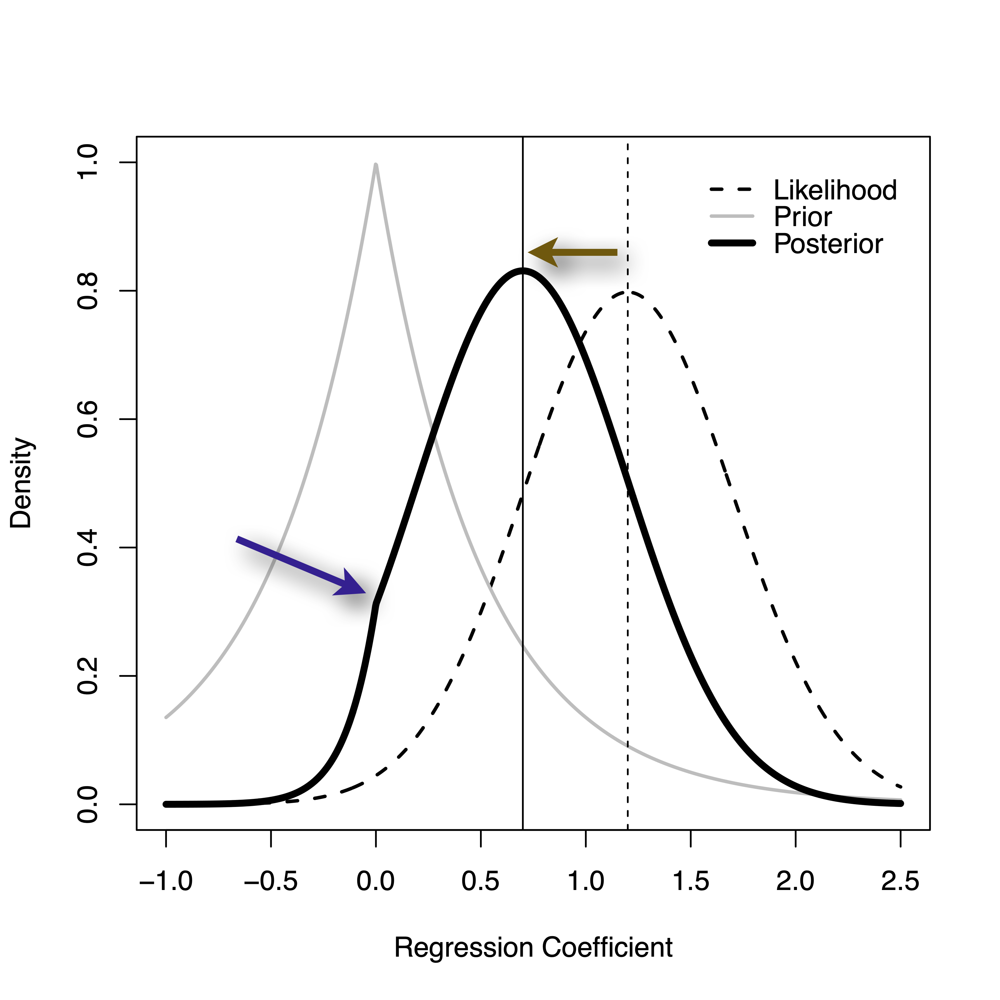
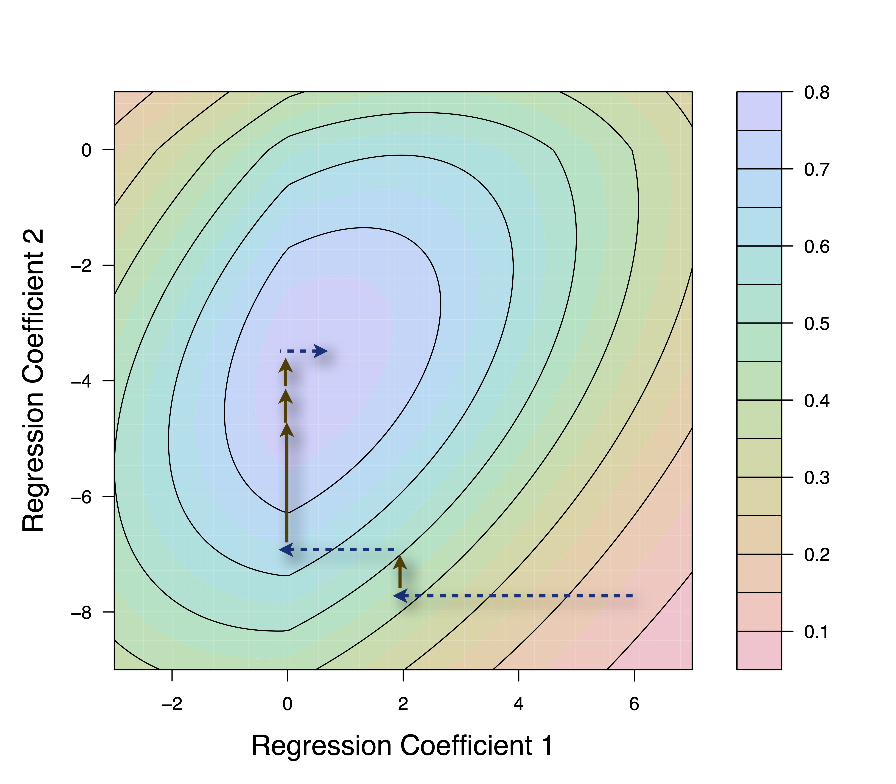

library(remotes)
remotes::install_github("OHDSI/Cyclops", ref="develop")Cyclops - high-performance regression at scale
Biostat 218
1 Introduction
In these lectures we will learn about:
- Fitting several important regression models
- Handling many covariates through regularization
- Efficient statistical computing

2 Ludicrous numbers of potential covariates
- All drugs by
- RxNorm ingredients, and
- ATC drug class
- All conditions
- SNOMED concept
- MedDRA PT/HLT/HLGT groupings
- All procedures
- ICD-9/10
- CPT4
- Others: demographics, total counts
Encoded: Binary indicator (yes/no) in, e.g., 6 months prior to treatment/exposure initiation
Key issues
Scale: 10Ms of covariates (trouble for usual regression)
3 Large-scale regularized regression
- Models with millions of covariates
- Throw in everything; let data decide
- Avoids overfitting
Long history:
- Ridge regression (Hoerl and Kennard, 1970)
- Least absolute shrinkage and selection operator (Tibshirani et al, 1996)
Limitations / advantages
- Regularization strength \(\lambda\) unknown a priori; cross-validation
- Modestly biased coefficients \(\rightarrow 0\)
- Lower MSE; better prediction (propensity scores improved)
 
4 Fitting large-scale regressions

- Linear, logistic, Poisson
- Conditioned models:
- Case controlled (logistic)
- Self-controlled (Poisson)
- Cox survival
- Parametric survival
- More to come?
But, conditioning \(\rightarrow\) very expensive likelihood \(e^{\mathbf{x_i \beta}} / \sum_{j \in {S}_i} e^{\mathbf{x_j \beta}}\)
- Convex optimiation
- Cyclic coordinate descent (CCD) for sparse \(\mathbf{X}\) and tall \(\mathbf{Y}\)
- Scalable for millions of samples and covariates
- R package Cyclops
5 Why noy other tools?
- Big \(N\), little \(P\) -
biglm- LINPACK / LAPACK (1970s \(\rightarrow\))
- Chunk / shard / stream data, low rank updates of decompositions
- Little \(N\), big \(P\) -
glmnet- Sparsity (2000s \(\rightarrow\))
- Often overlooked here: David Madigan, Ken Lange
- Big \(N\), big \(P\)
- High-performance statistical computing
- Massive parallelization, memory-bandwidth limited
On the horizon
CCD \(\rightarrow\) MM algorithms, improve parallelization - Zhou, Lange and Suchard, 2010
6 Installing Cyclops
Cyclops is currently hosted at https://github.com/OHDSI/Cyclops as a source code project.
To build latest developments
Also on CRAN
install.packages("Cyclops")To load Cyclops and its dependencies
library(Cyclops)7 Cyclops workflow
Worflow involves (at present) 2 steps:
- Data wrangling (load)
- Model fitting (analyze)
Advantages: data reuse, multiple wrangle implementations
cyclopsData <- createCyclopsData(
counts ~ outcome + treatment,
modelType = "pr")
cyclopsFit <- fitCyclopsModel(cyclopsData)
Discussion point
- Should we provide a 1-step wrapper? (standard in
R) - Could still allow reuse via data accessor function
8 At the beginning \(\ldots\)
\(\ldots\) there was the model (data likelihood). Cyclops supports many GLMs with a focus on conditioned models (case-control, self-controlled, survival)
?createCyclopsData Currently supported model types are:
"ls" Least squares
"pr" Poisson regression
"lr" Logistic regression
"clr" Conditional logistic regression
"cpr" Conditional Poisson regression
"sccs" Self-controlled case series
"cox" Cox proportional hazards regression
"fgr" Fine-Gray proportional subdistribution hazards regression Model specification: determines required data-firleds (computing efficiency)
R-pro tip
How did I output just part of the help-file?
9 Three ways to wrange your data
Using standard R formulae (with a Big Data twist)
counts <- c(18,17,15,20,10,20,25,13,12)
outcome <- gl(3,1,9)
treatment <- gl(3,3)
cyclopsData <- createCyclopsData(
counts ~ outcome + treatment,
modelType = "pr")Twist: RHS-only formulae to specify sparse / indicator covariates
cyclopsData2 <- createCyclopsData( counts ~ outcome,
indicatorFormula = ~ treatment,
modelType = "pr")10 Sparse formats for vectors (matrices)
mat <- model.matrix(~ treatment)
mat[,"treatment2"]1 2 3 4 5 6 7 8 9
0 0 0 1 1 1 0 0 0 - Dense: access \(N\) values
which(mat[,"treatment2"] != 0)4 5 6
4 5 6 mat[which(mat[,"treatment2"] !=0), "treatment2"]4 5 6
1 1 1 - Sparse: access 2 x #(!= 0) values
- Indicator: access #(!= 0) values
For matrices: compressed sparse row vs column formats
11 Quck data summaries
summary(cyclopsData) covariateId nzCount nzMean nzVar type
(Intercept) 1 9 1 0 dense
outcome2 2 3 1 0 dense
outcome3 3 3 1 0 dense
treatment2 4 3 1 0 dense
treatment3 5 3 1 0 densesummary(cyclopsData2) covariateId nzCount nzMean nzVar type
(Intercept) 1 9 1 0 dense
outcome2 2 3 1 0 dense
outcome3 3 3 1 0 dense
treatment2 4 3 1 0 indicator
treatment3 5 3 1 0 indicator12 Three ways to wrangle your data (cont)
Using raw vectors and matrices
library(Matrix)
sx <- Matrix(model.matrix(
~ outcome + treatment), sparse=TRUE)
cyclopsData3 <- createCyclopsData(
y = counts, sx = sx,
modelType = "pr")
All raw arguments:
y, dx, sx, ix
Bonus: pid (for stratification), time (for time-to-event) and weight (for weighting)
Discussion point
- What to call
pid(it’s not just a patient identifier)
13 Three ways to wrangle your data (cont)
Using dense / sparse data-pulls directly from SQL. Interface involves 2 data-tables, served in chunks:
- Dense
outcometable (stratum identifier, unique row identifier, y, time) - Sparse
covariatetable (unique row identified, covariate name, covariate value)
sqlData <- createSqlCyclopsData( modelType = "pr")
appendSqlCyclopsData(sqlData, ...)
finalizeSqlCyclopsData(sqlData)Heavily used in HADES packages like CohortMethod and PatientLevelPrediction; rarely used interactively
14 Maxium likelihood estimates and confidence intervals
We can use Cyclops to compute MLEs
cyclopsFit <- fitCyclopsModel(cyclopsData,
prior = createPrior("none"))
coef(cyclopsFit) (Intercept) outcome2 outcome3 treatment2 treatment3
3.044510e+00 -4.542553e-01 -2.929871e-01 1.268003e-05 1.268003e-05 Cyclops computes 95% confidence intervals using a likelihood-profiling approach; must specify covariate names for profile
confint(cyclopsFit, parm = "outcome2") covariate 2.5 % 97.5 % evaluations
outcome2 2 -0.8576926 -0.06254563 2215 Regularization and priors
\(L_1\) (Laplace) and \(L_2\) (normal) regularization (priors) are readily available and greatly reduce overfitting in high-dimension
cyclopsFit2 <- fitCyclopsModel(
cyclopsData,
prior = createPrior("laplace", variance = 10,
exclude = "(Intercept)"))
coef(cyclopsFit2)(Intercept) outcome2 outcome3 treatment2 treatment3
3.0302314 -0.4288459 -0.2692259 0.0000000 0.0000000 Cross-validation avoids setting the prior variance a priori
createPrior("normal", useCrossValidation = TRUE)16 Conditioned / hierarchical models
Case-control:
library(survival) ## Load some standard data
cyclopsData <- createCyclopsData(
case ~ spontaneous + induced + strata(stratum),
data = infert, modelType = "clr")Conditional Poisson / SCCS:
install.package(chopdat) ## Load small dataset from Farringtondata(chopdat)
cyclopsData <- createCyclopsData(
event ~ exgr + agegr + strata(indiv) + offset(loginterval),
data = chopdat, modelType = "cpr") ## or
cyclopsData <- createCyclopsData(
event ~ exgr + agegr + strata(indiv), time = chopdat$interval,
data = chopdat, modelType = "sccs")17 Conditioned / hierarchical models
Cox proportional hazards:
library(survival) ## Load some standard data
cyclopsData <- createCyclopsData(
Surv(time, status) ~ x,
data = aml, modelType = "cox")Multiple outcomes hierarchy:
## Do not run; still in development
cyclopsData <- createCyclopsData(
Multitype(counts, type) ~ outcome + treatment,
modelType = "pr")
cyclopsFit <- fitCyclopsModel(
cyclopsData,
prior = createPrior(c("normal","normal"), c(1,10),
graph = "type"))18 Fitting a simple cohort model
Cyclops readily takes an outcomes (dense) table and covariates (sparse) table as input. Highly useful:
- At scale –
covariates\(\leftarrow\)FeatureExtraction - Reusable across multiple outcomes / multiple models
library(dplyr)
set.seed(123)
sim <- simulateCyclopsData(
nstrata = 1, nrows = 100, # number independent of `outcomes`
ncovars = 20, # number of possible `covariates`
effectSizeSd = 0.1,
zeroEffectSizeProp = 0.5,
eCovarsPerRow = 5,
model = "poisson")Sparseness = 74.9 %head(sim$outcomes %>% select(rowId, y, time)) rowId y time
1 1 1 22
2 2 5 183
3 3 10 428
4 4 8 349
5 5 10 343
6 6 5 175head(sim$covariates %>% select(rowId, covariateId, covariateValue)) rowId covariateId covariateValue
4 1 3 1
1 1 14 1
2 1 17 1
3 1 20 1
5 2 8 1
6 2 14 1Build the cyclopsData object
cyclopsData <- convertToCyclopsData(
outcomes = sim$outcomes,
covariates = sim$covariates,
modelType = "pr")Sorting covariates by covariateId and rowIdcyclopsDataCyclops Data Object
Call: createSqlCyclopsData(modelType = modelType, floatingPoint = floatingPoint)
Model: pr
Rows: 100
Covariates: 21
Offset: 5.196719 (mean)
FP size: 64
Uninitialized interface.Fit the model
fit <- fitCyclopsModel(cyclopsData)
coef(fit) (Intercept) 1 2 3 4 5
-3.737768363 0.056466343 -0.067580050 0.014850445 0.002486427 0.034142675
6 7 8 9 10 11
0.165090744 0.042607339 -0.071913471 0.315930887 0.060434283 -0.073829917
12 13 14 15 16 17
0.027468360 -0.201697408 0.002237645 -0.028252287 0.051043418 0.021819587
18 19 20
0.016813864 0.028591749 -0.112556650
Can also batch-feed
outcomes and covariates directly from SQL
19 Comparison with existing tools
Simulate and fit a small-ish conditional logistic regression model:
model <- "logistic" ## Synthetic case-control
set.seed(123)
sim <- simulateCyclopsData( ## Generator by MJ Schuemie
nstrata = 200, nrows = 2000,
ncovars = 20, effectSizeSd = 0.2,
zeroEffectSizeProp = 0.8, eCovarsPerRow = 2,
model = model)Sparseness = 90.0875 %coefGoldStandard <- log(sim$effectSizes$rr)
fitR <- fitCyclopsSimulation(
sim, useCyclops = FALSE,
model = model, coverage = FALSE)Fitting model using clogit
Analysis took 0.0785 secsfitCyclops <- fitCyclopsSimulation(
sim, useCyclops = TRUE,
model = model, coverage = FALSE)Sorting covariates by covariateId, stratumId, and rowId
Analysis took 0.01 secs ( 3.6e-05 )20 Comparison with existing tools (cont)
Bigger, faster and better \(\ldots\)
writeLines(paste("MSE other:",
mse(fitR$coef,coefGoldStandard)))MSE other: 0.0224690841152386writeLines(paste("MSE Cyclops:",
mse(fitCyclops$coef,coefGoldStandard)))MSE Cyclops: 0.0138398446562074To be honest: MSE is a poor measure here; most coefficients \(\approx 0\)
- Cannot directly fit via
glmnet
21 Complie-time delegation and optimization
Key: C++ templates \(\rightarrow\) write-once-compile-many-run-fast
template <class BaseModel, class WeightType> template <class IteratorType>
void ModelSpecifics<BaseModel,WeightType>::computeGradientAndHessianImpl(
int index, double *ogradient,
double *ohessian, Weights w) {
real gradient = static_cast<real>(0);
real hessian = static_cast<real>(0);
IteratorType it(*(*sparseIndices)[index], N);
for (; it; ++it) { // Compile-time delegation for dense/sparse/indicator
const int k = it.index();
// Compile-time delegation
BaseModel::incrementGradientAndHessian(it,
w, // Signature-only, for iterator-type specialization
&gradient, &hessian, numerPid[k], numerPid2[k],
denomPid[k], hNWeight[k], it.value(), hXBeta[k], hY[k]);
} // When function is in-lined, compiler will only use necessary arguments
if (BaseModel::precomputeGradient) { // Compile-time switch
gradient -= hXjY[index];
}
if (BaseModel::precomputeHessian) { // Compile-time switch
hessian += static_cast<real>(2.0) * hXjX[index];
}
*ogradient = static_cast<double>(gradient);
*ohessian = static_cast<double>(hessian);
}